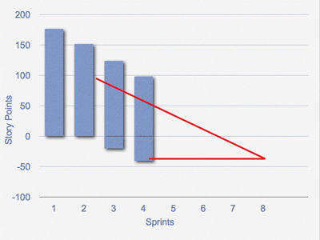

| 示例：备选发布燃尽图 |
 |
|
| 相关元素 |
|---|
通常发布燃尽图仅仅显示单一的数值——剩余工作量的变化净值（即进展）。 在某些情况下,这种简单性非常棒。 不过,它也掩盖了某些正在项目中发生的事情。 例如，假设一个团队在最后的冲刺中希望完成40(小时,点,或其它的工作量度量单位)的工作，但在燃尽图中图显示出净进步仅为10。 那么究竟是团队进展比预期的要慢还是在当前待发布的版本中加入了额外的工作? 知晓这个问题的答案很重要。因为不知道它，我们无法预测这个版本何时才能成功发布。 牢记这一点，我们将介绍另一种类型的燃尽图：
在上面的燃尽图中，每条柱形的高度代表当前发布版本中的剩余工作。 我喜欢用产品订单（以“用户故事”表现的订单项）中的估算表示剩余工作。从上图中，可以看出当前发布版本总共计划了175个故事点，如图第一次冲刺（sprint）所示。 团队在第一次个冲刺中完成了25个故事点，在第二次冲刺开始时还剩余150个故事点。到第三次冲刺开始时，还剩120个故事点。你可以看到，两个柱形顶端之间的差表示了团队在给定的冲刺中完成的工作。 在第四次冲刺开始时，产品负责人向项目中添加了新的工作。这些新增的工作显示在第四次冲刺柱形图的底部（0轴之下）。从图中看到，第四次冲刺的柱形范围在-40到90左右，即还有135个故事点的剩余工作。这135个故事点中有40个是新增的额外工作。 在第6次冲刺前，产品负责人移除了部分工作。 和在柱形的底部表示增加的工作一样，这些被移除的工作也被从底部移走，不论这些被移走的工作是初始计划的还是后来加入到项目中的。 一种预测项目需要多少次冲刺（sprint）的方法是：画一条趋势线和延长基线。例如：  上述方法的问题是,预测的最后期限并没有包括项目范围变化的速率。 你可以通过针对柱形图底端变化的速率再画一条趋势线来预测所需冲刺的数量，如下所示：
|


This program and the accompanying materials are made available under the
Copyright © 1998--2008 Mountain Goat Software. All rights reserved. |